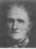
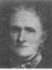

Photographs
Home
Histories
Charts
Photos - - >
Maps
Restricted
News
Info
Contact

 | Archie Earl Buchanan, 25 Mar 1892 - 5 Aug 1976 Florene Davis Buchanan, 28 Apr 1896 - 11 Mar 1980 |
123 4 4567 |
Forrest and Arvilla Wedding The four sisters Deane and Doc Belle and Dick Molloy Gloria in 1941 David School Picture David as a youth |
  12 12 3 3 4 4 | Archibald Waller Overton Buchanan - more family information Caroline Sophia Sorensen Buchanan Archie Earl and Carrie Myrl Buchanan, picture taken about 1896 Caroline Buchanan and Family, ca. 1916 Pictures on the left: Archibald W O Buchanan, Helen Amelia Whiting(1),Mary Ann Brown(2),Ann Marie Larsen(3),Caroline Sophia Sorensen(4) |
  12 12 | Hans Henrick Sorensen Family |
| John Johnson Davies Family |
  | Shadrach Roundy and Betsy Quimby Family |
| Lorenzo Wesley Roundy and Priscilla Parrish family |
|
| Henry William Davis and Annie Isadore Roundy family |
|
 | Samuel Parrish and Fanny Dack Family |
{kind=link}
{kind=link}
{kind=link}
{kind=link}
{kind=link}
{kind=link}
{kind=link}
{kind=link}
{kind=link}
{kind=link}
{kind=link}
{kind=link}
{kind=link}
Other Pictures from the Newsletters
Buchanan Tartan
{kind=link}
Coat of Arms (large)
{kind=link}
Coat of Arms
{kind=link}
Another version of the Coat of Arms
{kind=link}
Cemetery at Lima Illinois
{kind=link}